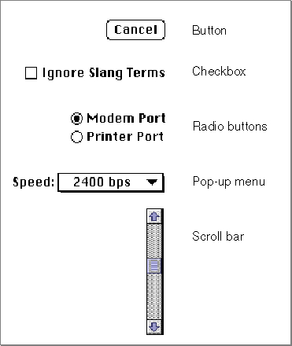

Controls
Most windows and dialog boxes contain controls. Controls are onscreen objects that the user can manipulate with the mouse to cause an immediate action from your application or to change settings in order to modify a future action.Buttons, checkboxes, radio buttons, pop-up menus, and scroll bars are examples of common controls used by most applications. Checkboxes, radio buttons, and pop-up menus are most often used in dialog boxes; buttons are most often used in alert boxes or dialog boxes; scroll bars are most often used in windows. Figure 1-3 illustrates these types of controls.

A button appears as a rounded rectangle with a title centered inside. Use a button to perform an instantaneous action when the user clicks the button, such as completing operations defined by a dialog box or acknowledging an error message in an alert box.
A checkbox appears as a small square with a title beside it; the box contains an X when the setting associated with the box is on and is empty when the setting is off. Use a checkbox to indicate an option that must be either off or on.
A radio button appears as a circle with a title beside it; the circle contains a small black dot when the setting associated with the radio button is on and is empty when the setting is off. Radio buttons are similar to checkboxes in that they retain and display
an on-or-off setting; however, only one radio button in a group of radio buttons should be on at any one time. You must decide how to group your radio buttons, and your application must ensure that only one radio button in a group is on.A pop-up menu is a menu that appears in a dialog box or window. You can use pop-up menus as an alternative to radio buttons, to allow the user to select from a list of choices or settings.
A scroll bar appears as a light gray rectangle that has scroll arrows at each end of the rectangle. A window can have a horizontal scroll bar, a vertical scroll bar, or both. You can use scroll bars to let the user change the portion of a document that the user can view within a window.
You can track and respond to user actions in controls, redraw controls, and manipulate controls using Control Manager routines. You usually use the Dialog Manager to handle most controls in dialog boxes or alert boxes for you. The chapter "Control Manager" in this book describes how to create controls (with special emphasis on creating and using scroll bars in windows), and the chapter "Dialog Manager" in this book provides additional information about how to create controls in dialog boxes and alert boxes.